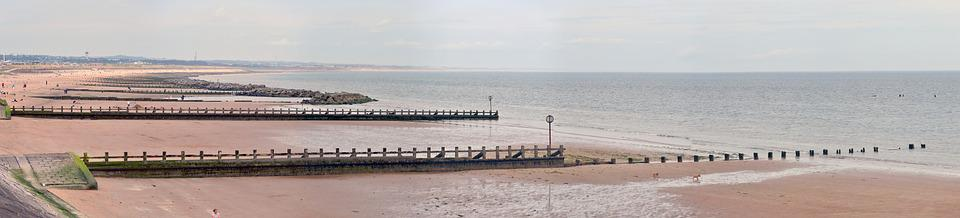
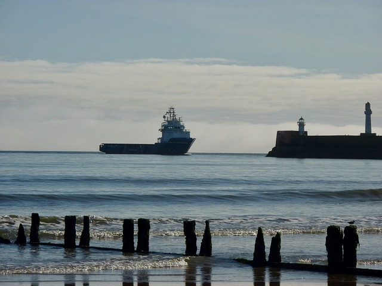

Visit Scotland
9 THINGS TO DO IN ABERDEEN
As well as unique architecture, Aberdeen boasts plenty of attractions to keep you busy. These 9 suggestions all offer a glimpse into the culture and history of Aberdeen, from its seafaring heritage at the Aberdeen Maritime Museum to the exotic plants and tranquil ponds of Duthie Park.


 - Aberdeen Art Gallery
- Aberdeen Maritime Museum
- Duthie Park
- St Machar's Cathedral
- Old Aberdeen
- Aberdeen Beach
- Golf in Aberdeen
- Provost Skene's House
- Gordon Highlanders Museum
- Aberdeen Art Gallery
- Aberdeen Maritime Museum
- Duthie Park
- St Machar's Cathedral
- Old Aberdeen
- Aberdeen Beach
- Golf in Aberdeen
- Provost Skene's House
- Gordon Highlanders Museum